SpikesPeak — GUI Guide (with screenshots)#
An illustrated, end-to-end walkthrough of the SpikesPeak browser UI: connect a probe (or a simulated source), set the channel map, watch the live signal, pick which channels to record, record, and check the result. Screenshots are from a real Neuropixels 1.0 probe + NI-DAQ and the simulated sources.
The UI runs in your normal web browser (served at
http://localhost:8234) — the SpikesPeak backend streams the data over a WebSocket. SeeREADME.mdfor launching and every toolbar control, andNeuropixels-1.0.mdfor the 1.0-specific channel-map details.
1. Launch & connect#
- Run
SpikesPeak.exe. It opens a dedicated browser window at the UI (or browse tohttp://localhost:8234). The top toolbar shows Source: None and a status of Ready. - Pick a source from the Source dropdown. There are three hardware choices, and they name the basestation — not the probe:
| Choose | When |
|---|---|
OneBox |
A OneBox (the USB box). Its 12-channel ADC streams alongside the probe. |
PXIe |
A PXIe chassis, probe only. |
PXIe + NI-DAQ |
A PXIe chassis where you also want the NI-DAQ card's analog and digital inputs — this is the one a closed-loop rig wants, because it captures the stimulus pulse. |
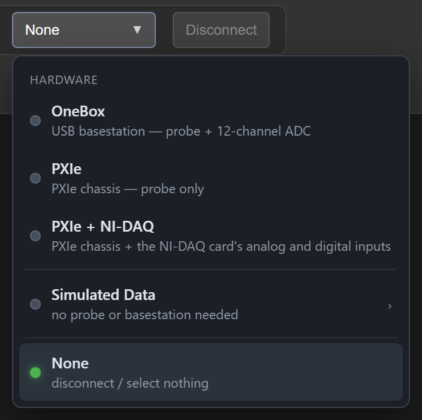
You do not tell SpikesPeak which probe you have. It asks the probe. A Neuropixels 1.0 and a 2.0 stream different things — a 1.0 gives separate AP and LFP bands, a 2.0 gives one wideband stream from which the LFP is computed — and all of that is worked out from the probe itself when it connects. Connecting takes a few seconds; the toolbar shows Found Neuropixels … probe when it is ready, and that message tells you what it found.
Simulated Data ›drills down, in the same menu, to the hardware-free simulated sources — no probe needed. It asks three short questions: which system (OneBox or PXIe), which probe (1.0 or 2.0), and then what to stream (a sine wave, synthetic ripples, a recorded file to replay, a ripple-detection scenario). ← at the top of each step goes back.
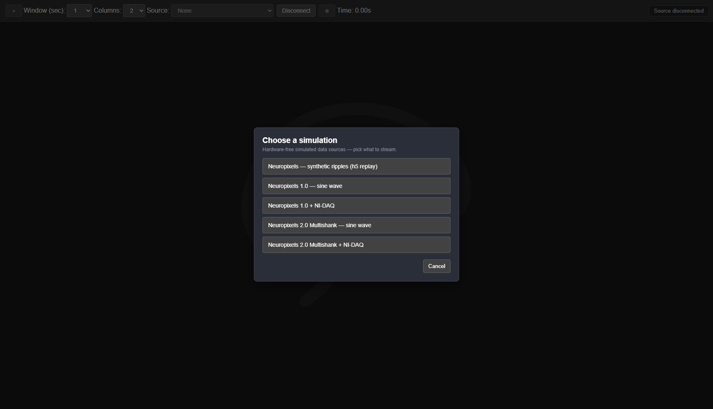
…and then lists the scenarios that match, each showing the exact config name underneath (that is the name a script would use):

Why there is no "NPX 1.0" and "NPX 2.0" in the list any more. There used to be twelve entries, one per probe-and-basestation combination, and picking the wrong one did not give you an error — it gave you flat traces and a recording full of nothing. The probe now identifies itself, so the wrong choice is not available to make.
The old profile names still work from the command line (
select "NPX 2.0 Multishank (OneBox)"), so scripts and published measurements keep running unchanged.
2. Probe Channel Map (Edit Map)#
After connecting, the Probe Map tab shows the probe's electrodes. The mode radio has Edit Map (set the channel map) and Select Recording Channels (§4).
Neuropixels 1.0#
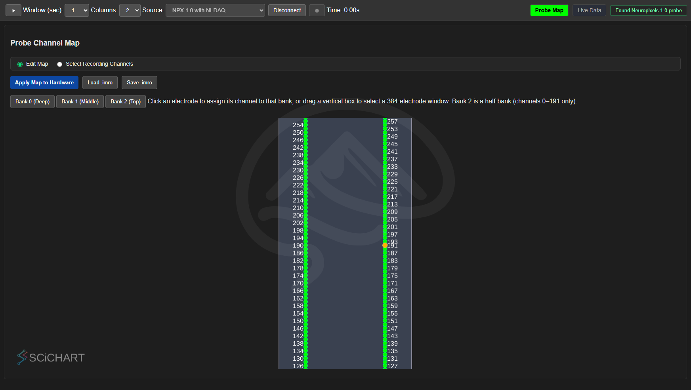
- Green = an electrode whose channel is active (will stream); gray = available; amber = the internal-reference site (channel 191 — reserved, not recordable).
- Click an electrode to route its read-out channel to it; drag a vertical box to assign every electrode in the box. The run is taken exactly as dragged — channels outside it keep the electrodes they already had — so you can build any selection you like, one region at a time. The Bank 0 / 1 / 2 buttons remain quick presets that fill all 384 channels at one depth (Bank 2 is a half-bank, channels 0–191 only).
- Apply Map to Hardware pushes the map to the probe (and re-orders the live view by depth).
- Save .imro / Load .imro write/read the channel map as a standard
.imrofile (a bad or wrong-probe file is rejected).
Neuropixels 2.0 multishank#
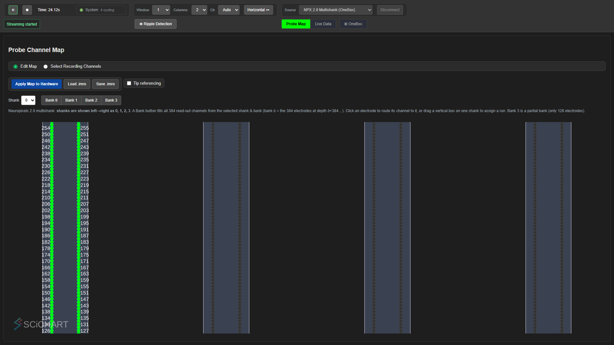
All 4 shanks are drawn side by side (labeled 0–3 left→right, matching the manual), each with its own shaft + tip. A Shank dropdown + Bank 0–3 buttons fill all 384 channels from the selected shank & bank. Because 384 channels are shared across 5120 electrodes, a full map partitions the channels among the shanks — click/drag on any shank to route those channels there.
Tip — designing complex custom maps: SpikesPeak's editor handles quick bank presets and contiguous selections well, but for fine-grained custom channel maps (especially multishank NP2 layouts) a dedicated probe-map tool is easier. Consider neurocarto (an open-source,
pip-installable Neuropixels channel-map editor) or a similar tool: design the map there, export a.imro, then Load .imro here and Apply Map to Hardware. This level of custom map design is genuinely easier on dedicated software than in SpikesPeak — or, frankly, in any current Neuropixels acquisition GUI.
3. Live Data (watch the signal)#
Press ▶ Play, then the Live Data tab. Traces are depth-sorted (deepest/tip at the bottom) and labeled by electrode + side.
The ▶ / ⏸ Play button shows its state by color: green ▶ when paused (ready — "press to play"), and a white ⏸ inside a green pulsing ring while streaming (the green ring is the unmistakable "live" cue — it mirrors the Record button's armed ring, but green). A disabled button (no source selected) stays gray.
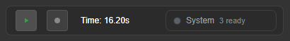
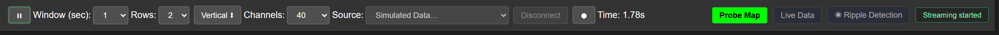
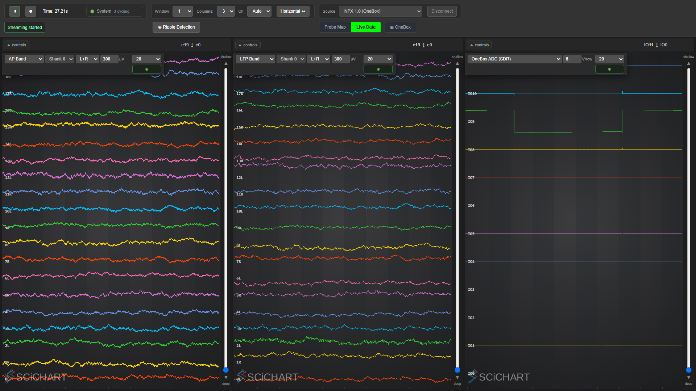
- Each column has dropdowns for Band, Shank (multishank probes), L+R / Left / Right, a
scale input, and a per-column channel count (
Ch:Auto / 20 / 40 / 60 / 80 / 120). Drag the slider to scroll depth. - The band names are exactly what the picker shows:
AP Band,LFP Band,RAW Band,OneBox ADC (SDR)on a OneBox source, andNIDAQ AI/O/NIDAQ DI/Oon an NI-DAQ one. There is no control captioned Scale -- the unit beside the input names it, and it follows the band:µVfor a probe band,V/rowfor the OneBox ADC,×for NI-DAQ. - The control strip stays fully visible as long as it fits. It folds to a
▾ controlschip only when the column is genuinely too narrow to hold it -- the row of controls needs 448 px beside the depth readout, and below that the traces get the width instead. On a 1920-px screen that means the strip stays open at one, two and three columns and folds at four. Opening the ripple dock takes ~380 px off the live view, which is enough to push three columns over the line. Hover the chip to peek, click it or pressCtrl+Shift+<n>to pin it open. The depth readout (e19 ↕ e0, orIO11 ↕ IO0for the ADC) stays visible either way. In vertical layout a stacked row is the full width of the window, so 448 px always fits and the strips stay open at every row count. - Layout —
Horizontal ⬌/Vertical ⬍(toolbar toggle, beside Columns/Rows): Horizontal tiles the strips side-by-side as columns (20 channels each) — best on a landscape monitor. Vertical stacks them as full-width rows (40 channels each) — ideal for a portrait / rotated monitor and laminar probes. The Columns/Rows selector sets how many strips (up to 4); the choice persists across reloads.
Density costs frame rate, and only frame rate. Columns × Ch is what the browser has to draw. Up to roughly 160–200 traces the view holds a full 60 fps; four columns of 120 — 480 traces on screen — runs at about 42 fps on this rig. Nothing is dropped from the data: acquisition, recording and ripple detection are untouched, and it is the display refresh that slows. (A faster renderer that holds 60 fps at that density exists and is opt-in — see
RendererExperiment.md.)
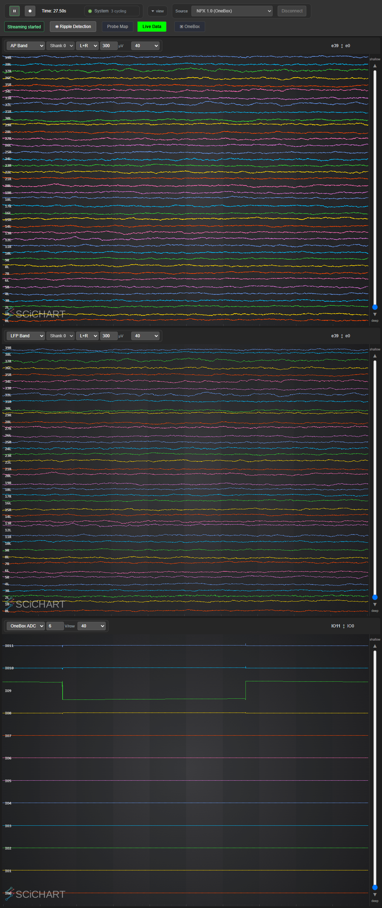
- With NI-DAQ, one column can show the analog channels (a TTL sync pulse is visible on ch 0). - On a real probe the traces look like neural activity (irregular, noisy). The simulated sources show a clean sine (identical on every channel) — e.g. the NP2 4-shank live view: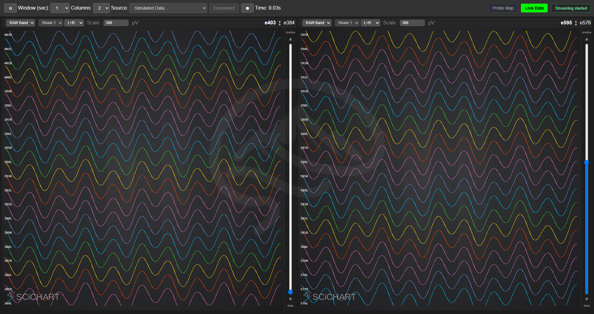
4. Select which channels to record#
Switch the Select Recording Channels radio (works any time — before or during Play).
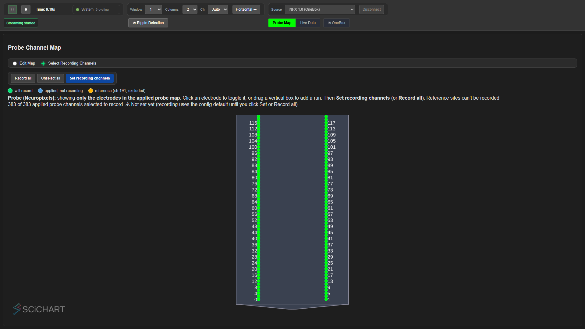
- Only the applied map's electrodes are shown: green = will record, blue = applied but not recording, amber = reference (excluded, NP1 only).
- Default is record all. Click an electrode to toggle it, or drag a vertical box to add a run. Record all / Unselect all / Set recording channels commit the selection.
- If a NI-DAQ recorder is present, a NI-DAQ channel grid appears below (buttons are 0-indexed to match the live view). Pick a couple, then Set.
- The selection is per-recorder (
window.recordChannels = {npx:[…], nidaq:[…]}) and overrides the config default for that session. You can only pick electrodes that are actually in the applied (streamable) map.
5. Record#
Recording is a two-step, deliberate flow so you never start writing by surprise.
- Press ● Record → a dialog asks for a recording name (animal/id) and an output directory on the SpikesPeak machine (Browse… opens a native folder picker). Click Set Location → the recorder is armed (a muted-red ring on the Record button):
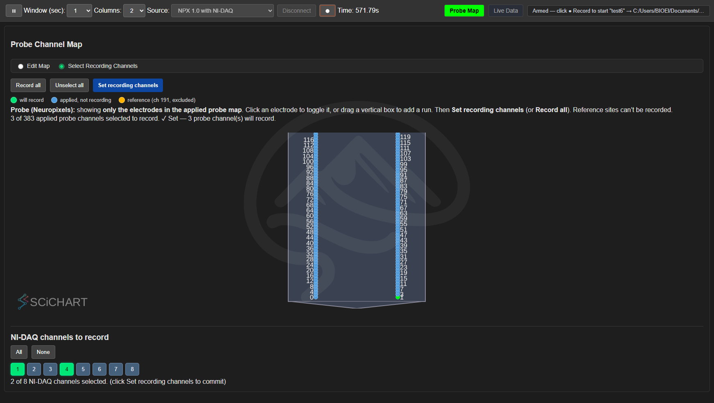
- Press ● Record again to START. The Record button turns solid red, a ● REC → name
badge appears, and files write live to
<dir>/<name>/<name>_<band>_<timestamp>.bin.
On the badge: the red dot blinks, the text does not — a filename that strobes is a filename you
cannot read. A long name is truncated in the MIDDLE, keeping the start and the last ten
characters, so ..._baseline and ..._asap stay distinguishable. The full path is in the
badge's tooltip.
(While streaming the Play button is a white ⏸ in a green ring; it returns to a green ▶ when paused.):
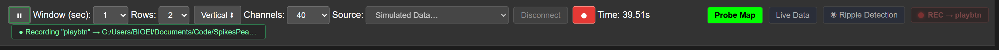
- Press ● Record again to STOP (files close; streaming keeps going — only Pause stops the stream). One start records every configured stream (NPX AP+LFP or RAW, + NI-DAQ) into that one folder.
Headless / scripted: the same flow runs with no clicking via
python/spikespeak_cli.py(select → waitready → probemap → play → record <dir> <name> → stop → pause → disconnect → quit). See../developer_docs/ControlCLI.md.
6. Check the recording#
Each .bin gets a self-describing .bin.json sidecar (band, channels, sample rate, units). The
python/spikespeak_postprocess package loads a band by electrode number as NumPy/xarray, and
python/examples/plot_recording.py <dir> writes two plots into the folder:
channels.png— the recorded electrodes in µV (AP + LFP). On a real probe you see neural signal; known-noisy electrodes stand out:
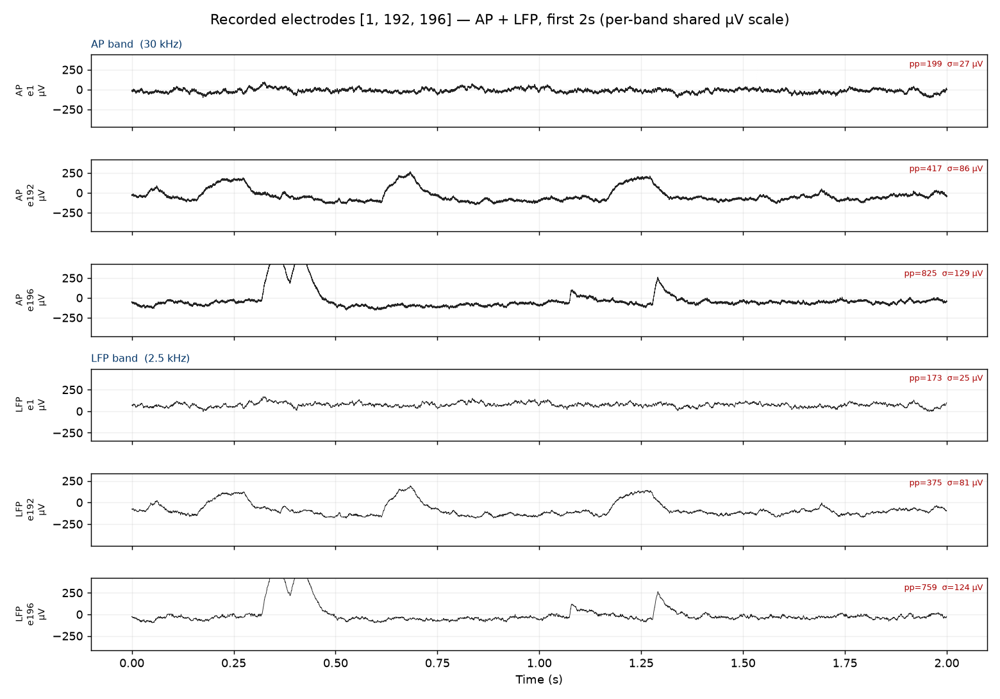
sync.png— NI-DAQ ↔ Neuropixels clock alignment from a shared TTL pulse train (recovers the ppm drift between the two clocks):
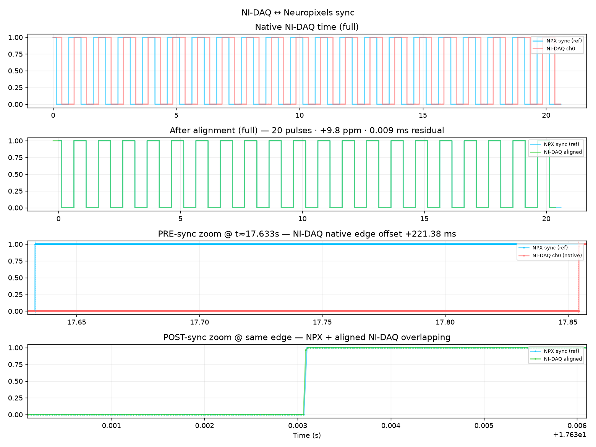
See ../python/README.md and
../developer_docs/RecordingTest.md (the canonical end-to-end check).
7. Teardown#
Close the browser window (the backend quits after a ~2 s grace) or, in a scripted session, use the correct order stop → pause → disconnect → quit. Never change/apply a probe map while streaming.